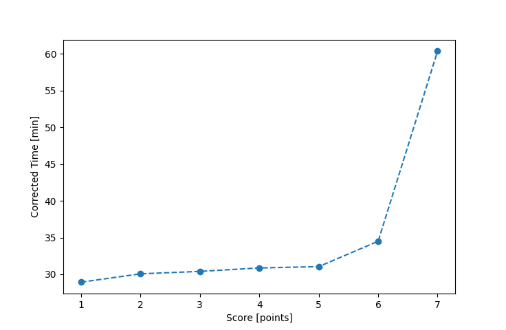

| Wind: | 2-3 (BFT) |
|---|---|
| RC: | Ron_F, David_Bu |
| Date: | July 09, 2017 |
| Notes: | M3 180 Port Rounding |
| Rank / Score | Name | Boat | Input Time [mm:ss] | Input Offset [mm:ss] | Race Time [mm:ss] | Race Time [s] | Handicap | Corrected Time [s] | Corrected Time [mm:ss] |
|---|---|---|---|---|---|---|---|---|---|
| 1.0 | Mike_F | SF | 36:14 | 00:00 | 36:14 | 2174 | 1.00400 | 2165 | 36:05 |
| 2.0 | Art_M | SWSX | 34:37 | 00:00 | 34:37 | 2077 | 0.95900 | 2166 | 36:06 |
| 3.0 | Chris_E | SF | 36:54 | 00:00 | 36:54 | 2214 | 1.00400 | 2205 | 36:45 |
| 4.0 | Mike_S | FSCT | 33:51 | 00:00 | 33:51 | 2031 | 0.90400 | 2247 | 37:27 |
| 5.0 | Nedra_F | SF | 38:24 | 00:00 | 38:24 | 2304 | 1.00400 | 2295 | 38:15 |
| 6.0 | Rod_H | LASEM | 37:21 | 00:00 | 37:21 | 2241 | 0.97300 | 2303 | 38:23 |
| 7.0 | Xavier | SWSX | 37:35 | 00:00 | 37:35 | 2255 | 0.95900 | 2351 | 39:11 |
| 8.0 | Lewis_V | BCN | 36:52 | 00:00 | 36:52 | 2212 | 0.87000 | 2543 | 42:23 |
| 9.0 | Sara_M | BNSH | 47:56 | 00:00 | 47:56 | 2876 | 0.94500 | 3043 | 50:43 |

Application Notes:
All race results are unofficial
View source code at https://github.com/cessnao3/portsmouthracecalc/